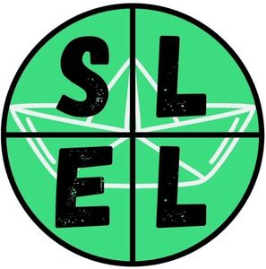

Trade Mark Journal No.2025/037 12 September 2025
WO0000001863226 (35,41)
Office of origin: Australia
Date of International Registration:20 May 2025
Date of designation in the UK:
20 May 2025

International priority date claimed: 11 May 2025
(Australia)
(2544766)
- Class 35
- Online retail store services connected with the sale of educational supplies; marketing, advertising and promotion services; marketing, advertising and promotional services; sales promotion services for others; marketing and promotional services; sales promotion services; business information about sales methods; advertising, promotion and marketing services; advertising, promotional and marketing services; advertising, marketing and promotion services; consultancy relating to sales promotions; online marketing services; sales management; advertising, marketing and promotional services; sales management services; online advertising and marketing services; online wholesale store services connected with the sale of educational supplies; advertising, marketing and promotional consultancy, advisory and assistance services; sales management consultancy.
- Class 41
- Coaching [education and training]; education services in the field of personal coaching; educational services in the nature of coaching; teaching and training services in the fields of business, industry and information technology; education, teaching and training; business education services; education services in the field of mindset coaching; personnel and personal development training and coaching services; coaching [training]; education, training and entertainment services; computer based teaching services in the field of business management; teaching and educational services; training services in the nature of coaching; training courses in strategic planning relating to advertising, promotion, marketing and business; education and training consultancy; educational and teaching services; computer-based teaching services in the field of business management; transfer of business knowledge and know-how [training]; business education; business training; education services in the field of life coaching; personal coaching [training]; computer based educational services in the field of business management; education and training in the field of business management; business tutoring services; education and training services; provision of online training; mentoring [education and training]; providing online training; computer-based educational services in the field of business management; conducting of teaching courses in business management; providing online information about training.
The Sell Life Pty Ltd
Representative: ImPrint, 4th Floor, 4 Tabernacle Street London EC2A 4LU UNITED KINGDOM